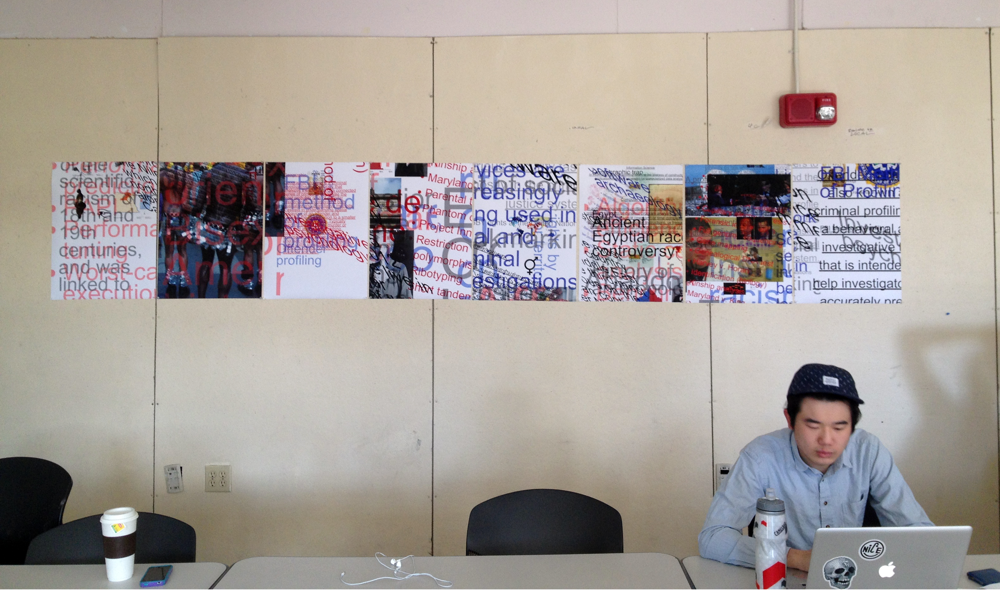
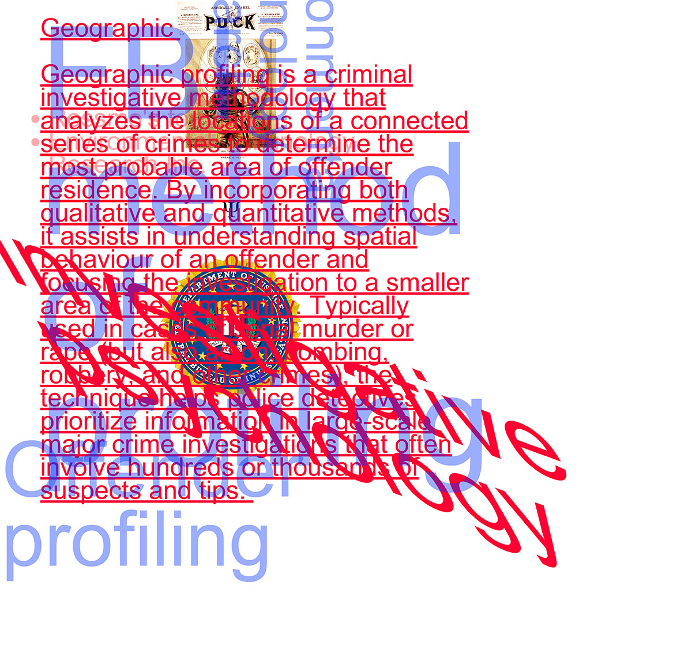
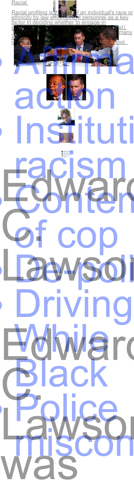
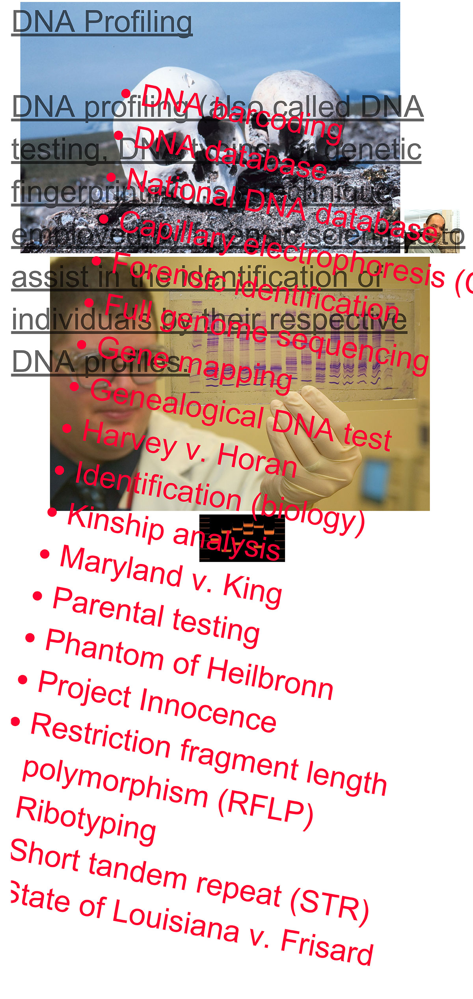
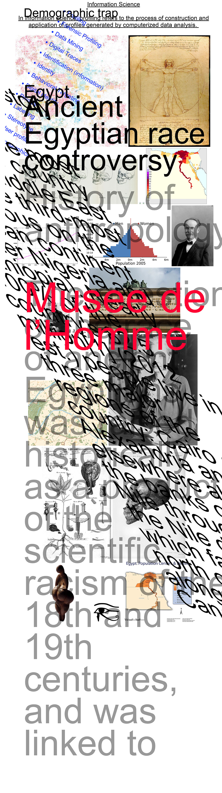

---
layout: page
title: Profiling Wikipedia
author: Kelly Walters & Christina Webb
description: A System of 8
category: project
printready: true
caption: "In this investigation we explored the topic of profiling as it relates to online content. In our research we found that there were multiple definitions for profiling, that not only represented the social and political applications that we are familiar with, but technological aspects as well. Using Wikipedia as a source, we found 8 definitions that led back to both our cognitive interests and our process of using HTML code. This inspired a systematic approach to gathering content, collecting imagery, applying HTML attributes and forming the final composition."
---

Hey

Hey!

Hey!!Hey!!!Hey!!!!

Hey!!!!!

Hey!!!!!!